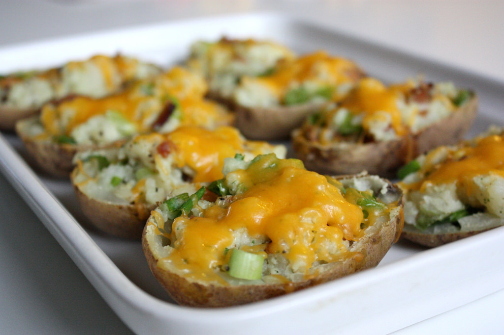

Loaded Baked Potato Bites

Description
These loaded baked potato bites have all the things you love on a baked potato in bite-sized form. Not only are they cute, they are packed full of flavor and will be the first thing to disappear on your appetizer spread. I guarantee it!
by Nicole Russell
Ingredients
- 1 pound bite-sized potatoes, such as Tasteful Selections® Ruby Sensation Bite Size Potatoes
- 1 tablespoon olive oil
- 1 teaspoon kosher salt
- 2 tablespoons sour cream
- 1 tablespoon shredded Cheddar cheese
- 1 teaspoon real bacon pieces
- 1 green onion, green part only, sliced
Steps
- Preheat the oven to 200 degrees C (400 degrees F). Line a baking sheet with aluminum foil.
- Place potatoes in a large bowl. Drizzle oil over the top; toss. Add salt; toss. Place potatoes on the baking sheet in an even layer.
- Bake in the preheated oven until easily pierced with a fork, about 20 minutes. Remove from the oven and let stand 5 minutes.
- Using a sharp knife, cut a wedge in the top of each potato.
- Top each potato with sour cream, Cheddar cheese, bacon, and green onions. Serve immediately.
Home